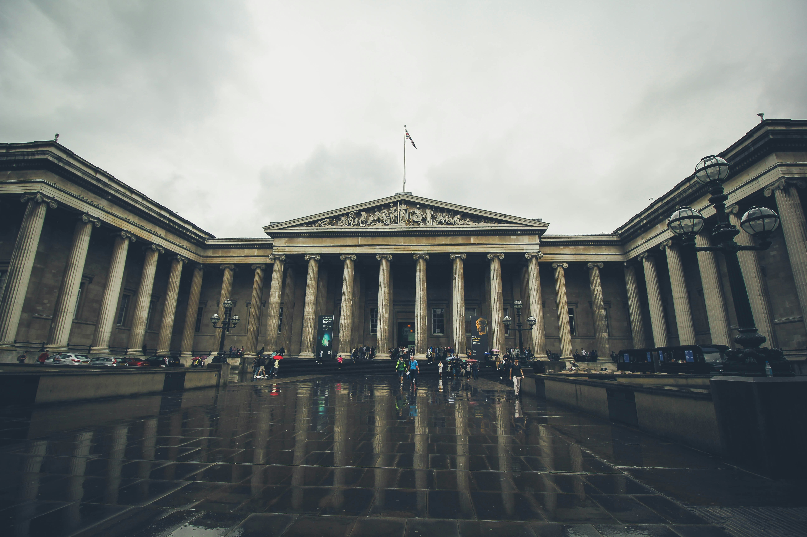
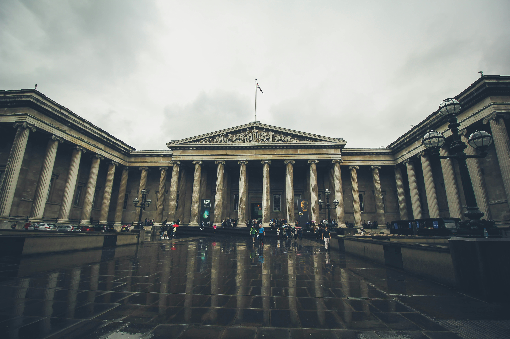

London Eye
Első napon egyből a dolgok közepébe vágtunk és megnéztük a London Eye-t. A közlekedés kifejezetten egyszerű volt autó nélkül is az oyster card-nak köszönhetően.
A London Eye az elvárásoknak megfelelően kifejezetten túristás, ez főleg a mindíg elötte lévő hatalmas sorban mutatkozik meg, amit sajnos még előzetes foglalás esetén is ki kell állni. A sor méretéhez képest gyorsan haladt, kb. 45 perc alatt már benn is voltunk.
Ettől eltekintve jó élmény az egész, a kabinokban, kb 15-20 ember elég szellősen elfér és közben szabadon lehet mozogni, be lehet látni London nagy részét, a parlamentel és a palotával együtt. Mi is ebben gyönyörködtünk, amíg észre nem vettem a tesómmal egy csoport lányt aki a mi kabinunkat nézte egy másik kabinból. Úgydöntöttünk, hogy integetünk nekik, mire viszza integettek és elkezdtek valamit mutogatni. Megfejtettük, hogy valószínű azt akarkák, hogy táncoljunk valamit (a tesóm tudta, hogy konkrétan mit), eltáncoltuk. Ezen is jókat nevettünk, majd szép lassan vége lett a körnek, amikor ugyan az a csoport lány csinálni akart egy fotót velünk, sajnos a fotó nekem viszont nincs meg.